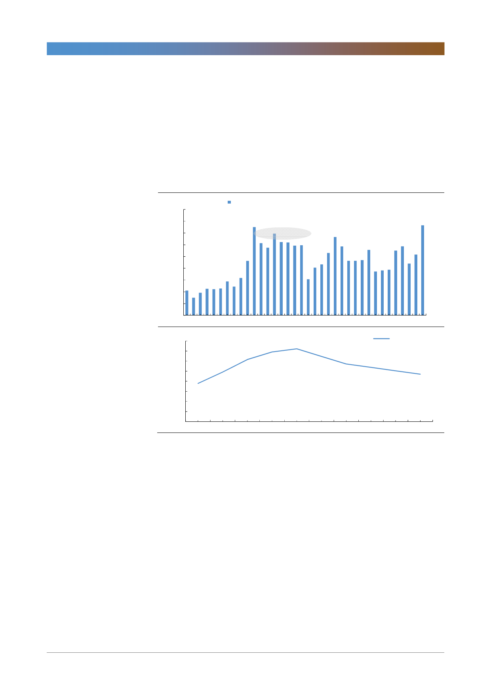

GS건설(006360)
지금 베트남에 왜 신도시가 필요한가. 베트남의 인당 GDP는 2016년 2,171달러
로 아파트가 주요 주거문화로 급속히 확산되던 1980년대 한국 수준이다.
1975~2005년 한국의 주거 유형 중 아파트 비중은 무려 51.1%p 상승했는데 1
기 신도시가 입주했던 1995~2000년, 폭발적으로 늘었다. 1990년 인구의 24.4%
가 서울에 집중된 과밀화 현상이 1기 신도시가 1989~2003년 집중 추진되며
1995년부터 완화되었다. 이 시기 건설업종 지수는 역대 최대폭으로 올랐다.
[그림 11] 분당 신도시 건설 시기 한국의 주택공급량
(천세대)
900
800
700
600
500
400
300
200
100
주택건설인허가 1989~2003
1기신도시(분당/일산/산본/중동/평촌) 사업
1980
1985
1990
1995
2000
2005
2010
2015
26%
24%
22%
20%
18%
16%
14%
12%
10%
1970
24.4%
1990년 정점 이후
신도시 개발을 통한 서울 인구집중 완화
1975 1980 1985 1990 1995 2000
자료: 통계청, 한국투자증권
2005
서울인구 비율
2010 Apr-16
9